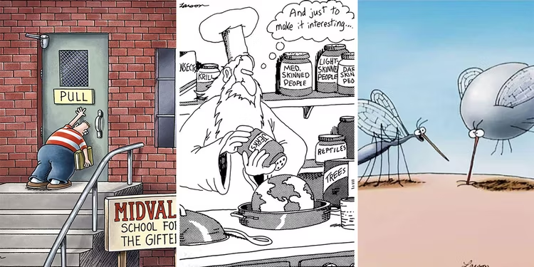

Cartoon Favorites
Calvin and Hobbes

Calvin and Hobbes, American newspaper comic strip that ran from 1985 to 1995,
chronicling the high jinks of Calvin, a six-year-old boy, and his pet tiger, Hobbes.
Calvin and Hobbes was renowned for its vivid portrayal of a child’s imagination.
FarSide

The Far Side is a single-panel comic created by Gary Larson and
syndicated by Chronicle Features and then Universal Press Syndicate,
which ran from December 31, 1979, to January 1, 1995 (when Larson retired as a cartoonist).
Dilbert

Dilbert is an American comic strip written and illustrated by Scott Adams,
first published on April 16, 1989.[2] It is known for its satirical office humor about a
white-collar, micromanaged office with engineer Dilbert as the title character.
It has spawned dozens of books, an animated television series,
a video game, and hundreds of themed merchandise items.